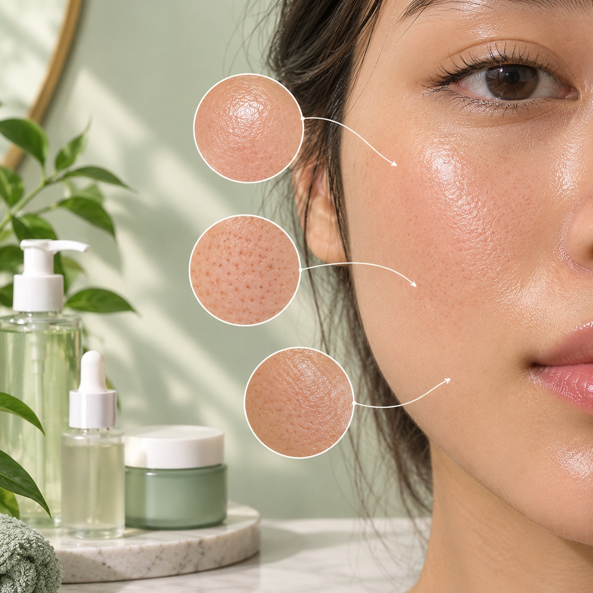

Understand your skin and care for it gently.
HomeOily skin produces more sebum (natural skin oil), which can make the skin look shiny.

May help manage excess oil, Supports skin barrier function and reduces inflammation.
Helps unclog pores, reduce blackheads and whiteheads, Useful for acne-prone skin.
Helps the skin retain moisture, Keeps skin hydrated for long time.
Precautions
Note: Everyone's skin is different.
Introduce new products carefully and stop if irritation occurs.